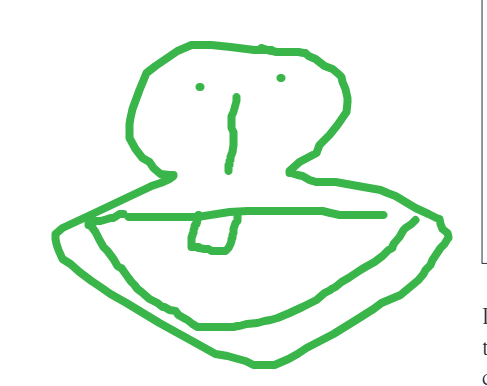
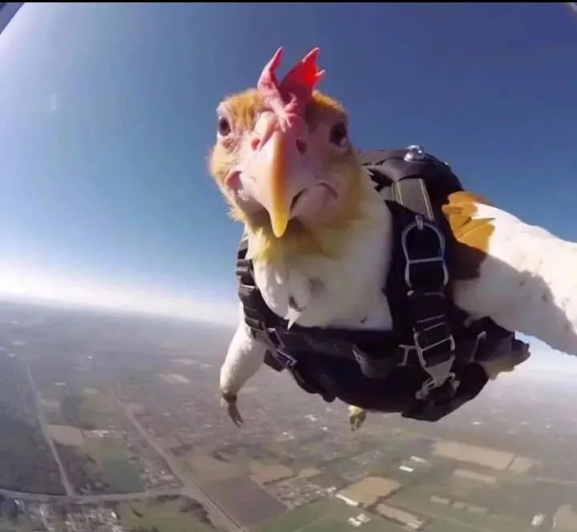
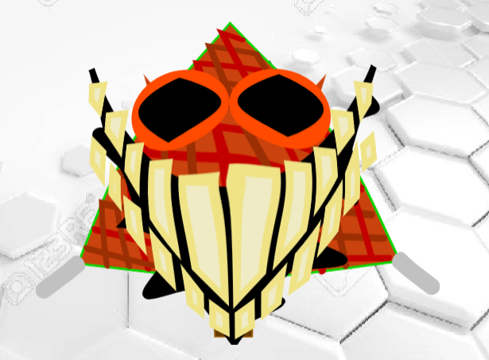
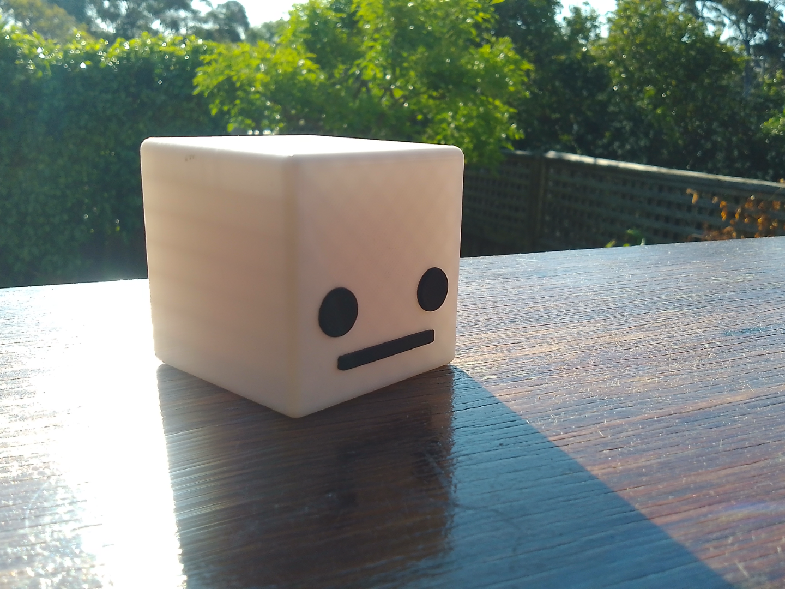

Galería de imágenes random
Quizás me pase un poco de random, pero es lo que hay.





1 - Rascarte manualmente.
2 - Ir al chino a comprar un rascador. Si no hay un chino en tu barrio, compralo aquí.
3 - Consultar a un electricista.
4 - Tomarte unos polvitos mágicos, que aparte de darte alucinaciones, hace que no te pique el culo. Ver ingredientes.
5 - Invertir la carga subatómica de los átomos de los nervios del culo.
6 - Cactus.
7 - Cactus.
8 - Cactus.
9 - Pensar filosóficamente sobre que te pica el culo.
10 - Construir tu propio rascador adaptado a tus gustos.
11 - 122[d4-0188]
12 - Estratosfera.
1 - Entrar a la carpeta de archivos del IMTLazarus y meter un ransomware. (Muy rentable)
2 - Aburrirte.
3 - Sobrecargar el procesador y que se derrita, y luego ver como cae derretido por el puerto USB.
4 - Poner un tenedor en el microondas.
5 - Comerte un buen plato de Arròs Tres Tomàquets.
6 - Ir al vater, llenarlo entero de CocaCola y tirar un quilo de mentos.
7 - Ejecutando cactus.exe
8 - Cactus te está espiando.
9 - Cactus está robando tu imformación.
10 - Cactus está sobrecargando la CPU.
11 - Cactus se está aproximando a tu ubicación
12 - CACTUS ESTA EN TU CASA
·1 huevo
·200g de queso
·400g de procesador derretido
·1 paquete de chicles
·350ml de tinta fluorescente
·600g de edulcorantes y aditivos
·Sartén
·Trituradora
·Lanzallamas
·Microscopio
·Táser
·Poner el huevo en un bol.
·Quemar con el lanzallamas la cáscara del huevo. (Para ir rápido)
·Tirar lo que quede dentro del bol a la trituradora.
·Cactus está ubicado en la estratosfera.
·Añadirle el paquete de chicles y encender la trituradora. (Para que quede una masa más espesa y no se derrame por todas partes)
·Cuando hayan pasado 30 segundos, añadir 350ml de tinta fluorescente. (Así la tortilla brillará y atraerá a mas gente)
·Poner la mezcla bajo el microscopio, y remover cuidadosamente las bacterias que hayan tenido la valentía de sobrevivir. (Considera darles un trofeo)
·Poner la mezcla ahora en la sartén.
·Mientras se esté haciendo, poner 200g de queso.
·También poner los 400g de procesador derretido. (Así tu tortilla podrá procesar información y hacer cálculos)
·Hace falta usar el táser para hacer funcionar la tortilla.
·Coger una garrafa con los 600g de edulcorantes y aditivos y echarlos directamente a la tortilla. (Así la tortilla tendrá un sabor mas industrial y alucinógeno)
¡Ya está lista tu Tortilla Industrial! (Puede servir para publicidad)
·Burger cangreburger - 62,99€
·Batido de Kelp - 27,99€
·Batido de cigarros - 55,99€
·Biturbo porro - 495.929.225,99€
·Triturbo porro híbrido biónico - 242.077.635,99€
·Cuatriturbo porro híbrido eólico cibernético - 294.843.703,99€
·Quintiturbo porro transformer fotosintético multidimensional con Bluetooth - 366.280.756,99€
·La Tortilla Industrial - 680.358.212,99€
·Cactus.exe descargar gratis - 0€
·Asdwuncydpthomgvh - 84,99€
·Setas alucinógenas - 44,99€
·Alimento no clasificado - 127,99€
·Cangreburger con un motor de coche - 221,47€ (¡Descuento del 0,2%!)
·Extracto de estratosfera - 157,99€
·Aire con aroma a aire - 527,99€
·Polvitos mágicos - 245,99€
·Edulcorante con sabor a tierra - 80,99€
·Varas metálicas - 67,67€
·Procesador derretido - 179,99€
·Helado radiactivo - 72,99€
·Helado de petróleo - 73,99€
·Helado de asfalto - 74,99€
·Cable de fibra óptica - 59,99€
·Disco duro caramelizado (Patrocinado por ChatGPT) - 99,99€
*Estás obligado a comprar el alimento industial de Calamardo. La propina es obligatoria con un mínimo de 1250€. El incumplimiento de estas normativas puede llevar a ser un esclavo en el menú de Calamardo.*
bf4120646f6e6465207661732c206e6572643f20536f6c6f20686173207065726469646f20656c207469656d706f2e2041686f726120766573206120636f6d70726172206d69732070726563696f736f7320616c696d656e746f7320696e647573747269616c65732e
© 2026 Calamardo



